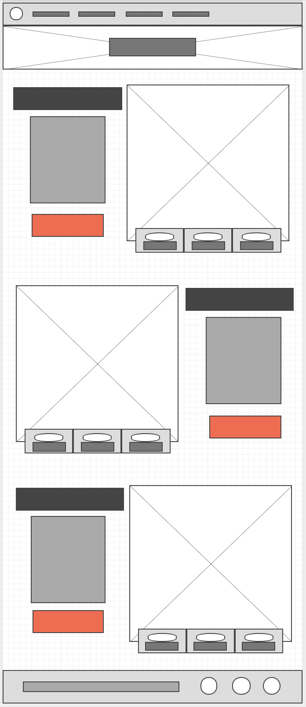

Overview
Purpose
White Water rafting is an amazing experience that is enjoyed by many all across the country.This website will help us reach those looking to experience this and find joy in building stronger team-working skills with famil and friends. TO help build revenue stream by making our services more available to the public eye, and help people know and understand what we do and why we do it. This website will help our customers find us, and have the information available to interact with us.
Audience
<<<<<<< HEADOur audiences are primarily families and group-based organizations. Our company is based off family values of growing closer as friends, families, and teams in a safe adventurous environment. Demographic will be people living within 45,000 and 500,000 annual salaries. Families who are looking for fun and an enjoyable time together, coming closer together. Group based organizations such as church youth groups or a company team on a getaway to build team skills and destress activities. Our site is a site for non-avid white-water rafters, or those who are of minimal experience on the river. Challenges for people on the page is some people will come looking for only equipment rentals which can cause some friction because we only will be doing guided tours, and making our site easy-to-use, and easy to set up reservations. Our site will be target towards people between the ages of 12-75, whereas age groups for our company will be between 4-80. Looking for an adventure and excitement but not looking to be put in dangerous situations. The part of the Snake River we raft is mildly slow, yet has some exciting parts. Running times and timing of the page will be during the early summer to near late fall. Imagery will be family friendly, scenic calm shots, and children and adults enjoying themselves.
=======Our audiences are primarily families and group-based organizations. Our company is based off family values of growing closer as friends, families, and teams in a safe adventurous environment. Demographic will be people living within 45,000 and 500,000 annual salaries. Families who are looking for fun and an enjoyable time together, coming closer together. Group based organizations such as church youth groups or a company team on a getaway to build team skills and destress activities. Our site is a site for non-avid white-water rafters, or those who are of minimal experience on the river. Challenges for people on the page is some people will come looking for only equipment rentals which can cause some friction because we only will be doing guided tours, and making our site easy-to-use, and easy to set up reservations. Our site will be target towards people between the ages of 12-75, whereas age groups for our company will be between 4-80. Looking for an adventure and excitement but not looking to be put in dangerous situations. The part of the Snake River we raft is mildly slow, yet has some exciting parts.
>>>>>>> f1e316b2db88300072a33aa65dd7e06fb56bdb60Branding
Website Logo

Style Guide
Color Palette
Palette URL:
https://coolors.co/396e94-e7c24f-a43312-381d2a-aabd8c| Primary | Secondary | Accent 1 | Accent 2 |
|---|---|---|---|
| [#03045e] | [#0077b6] | [#00b4d8] |
Typography
Heading Font: Oswald
Paragraph Font: Manrope
Normal paragraph example
The best Whitewater Rafting in Colorado, White Water Rafting Company offers rafting on the Colorado and Roaring Fork Rivers in Glenwood Springs. Since 1974, we have been family owned and operated, rafting the Shoshone section of Glenwood Canyon and beyond.
Colored paragraph example
Trips vary from mild and great for families, to trips exclusively for physically fit and experienced rafters. No matter what type of river adventures you are seeking, White Water Rafting Company can make it happen for you.
Navigation
Site Map
Wireframes
Home